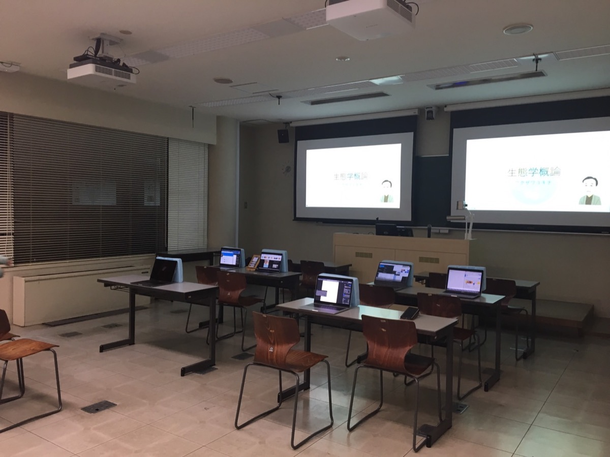
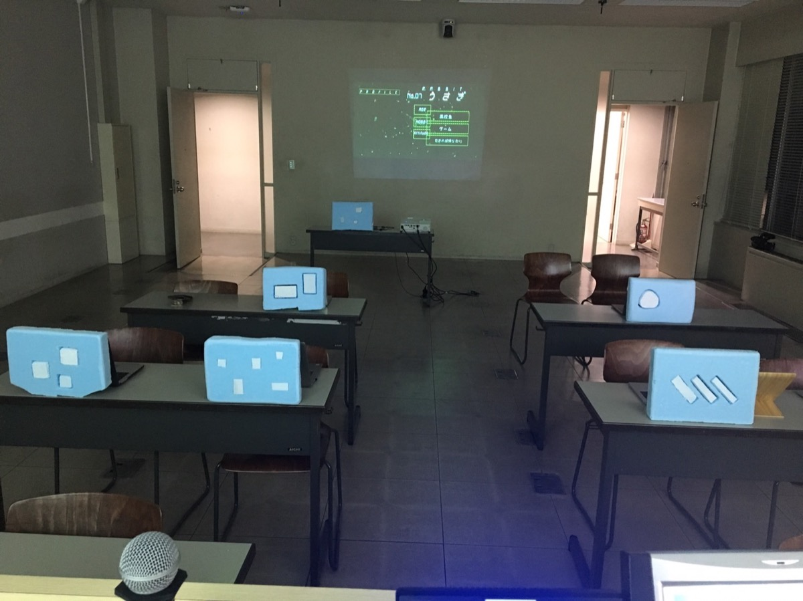

山口県から神奈川県に上京する新幹線の中で、目の前の席に座っていた子供が看板にイラストとして描かれた富士に興味を示していた。
子供ならばトキメキを伴って受容できる情報も、大人は当たり前の情報として受け流す事が多くなる。だからこそ、歳を取るにつれて、年が経つのが早くなるのだと感じた。
トキメキ情報量とは時間の密度をはかった量。同じ時間が流れていても短い命のセミとゆっくり長生きカメとでは感動した回数やトキメく対象は違うはず。
危険にさらされたウサギと怖いもの無しのチーターが体感する時間の速さだって全く違うだろう。
人間である（ハズ）の鑑賞者には、あらゆる生物たちの授業風景を通し自分と違った時の流れを体感し、自分の時間の流れをトキメキ情報量によって再認識して欲しい。
SFC内の展示という条件があった為、発想の実装方法を授業に落とし込んでいる。
授業スライド、授業音声をまず作成した。かげろう、セミ、うさぎ、チーター、かめ、くじら、の7匹の動物の寿命・生物的特徴から、その動物たちが授業の時間にどんな画面操作をするのかを考え、授業音声に合わせて操作を実行し、画面キャプチャで動画として撮影した。
そこに動物たちが座っているかのように、椅子と机の距離感、配置も決めた。